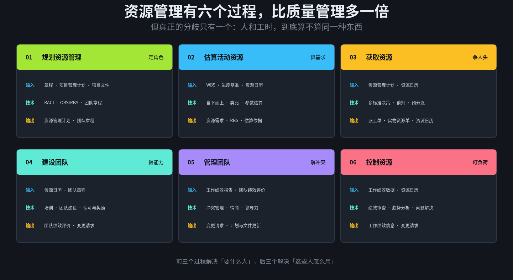
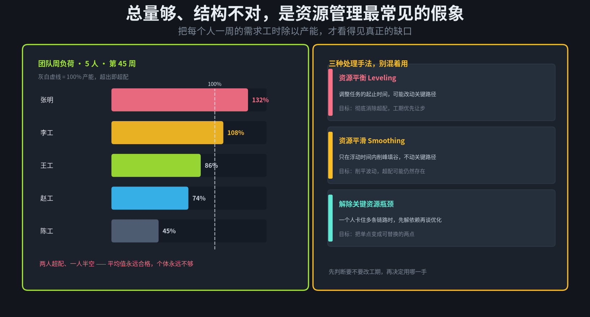
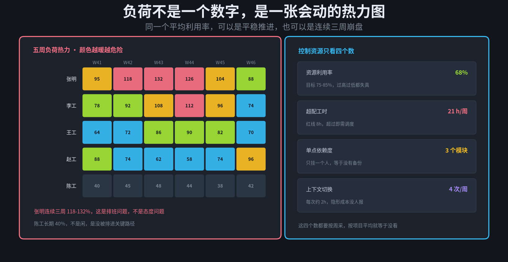
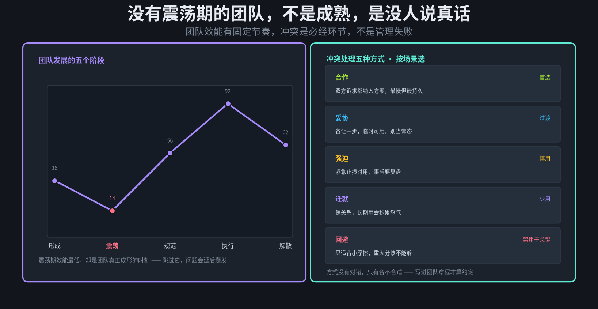
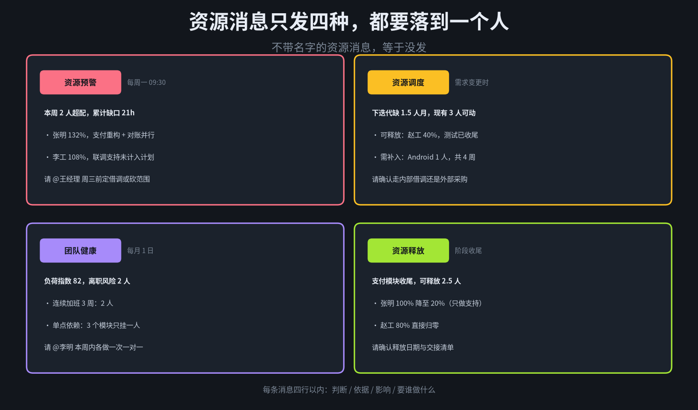

上一篇讲质量，难点在口径太软。这一篇正好相反——资源管理的难点是数据太硬。
硬到什么程度？你打开任何一个项目管理工具，里面都有「资源」这一栏，填着人名、开始日期、结束日期、投入百分比。看起来一切都在掌控之中。但只要你问三个问题，这张表立刻失效：这个人下周实际有几天可用？他和另一个人能不能互换？他现在手上到底压着几件事？
道理不复杂。人不是可分配的单位，至少有三处和物料完全不同：
第一，产能是波动的。同一个人，这周能做 40 小时，下周可能只剩 25 小时——请半天假、被拉去救一次火、参加两场评审，全都不在计划里。
第二，技能不可替换。两个后端工程师在表格里是同一种资源，实际上一个熟支付链路、一个熟账务对账。把他们互换，不是调配，是重新学习。
第三，负荷不可见。工时系统记录的是「你填了什么」，不是「你真实投入在哪」。一个人填了 100% 支付重构，同时还在群里回三个项目的消息，这件事没有任何一张表会告诉你。
资源管理的核心不是分配，是让「谁能做什么、什么时候有空、现在有多满」这三件事同时可见。
这是十大领域系列的第五篇。仍然是同一套结构：六个过程的输入输出、两个重点（估算与日历、负荷与监控）、六份文档模板、归档方式、四种群消息、SKILL 目录，最后是边界。
先说清一件事：这套东西的目标不是把人排满，是让超配和空转同时可见。排满听起来是效率，实际是风险的堆积——任何一个请假、任何一次线上事故，都会让整条链路断掉。
1
六个过程：从「要多少」到「还剩多少」
PMBOK 里资源管理有六个过程，是十大领域中过程最多的一类。六个过程可以分成两组：前三个解决「要什么人」，后三个解决「这些人怎么用」。
规划资源管理 定角色。用 RACI 说清谁负责、谁批准、谁被咨询、谁知会；用 OBS 和 RBS 把组织结构和资源类型拆开。输出资源管理计划和团队章程。
估算活动资源 算需求。按 WBS 和进度逐条推，每一活动要几个人、什么角色、多少工时。输出资源需求、资源分解结构 RBS、估算依据。
获取资源 争人头。这一步大部分时候不是「分配」，是「谈判」——和职能经理谈、和其他项目经理谈、和外包供应商谈。输出派工单、实物资源分配单、资源日历。
建设团队 提能力。培训、集中办公、认可与奖励、团队建设活动。输出团队绩效评价。
管理团队 解冲突。跟踪个人和团队表现、处理冲突、做绩效反馈。输出变更请求和计划更新。
控制资源 盯负荷。按周核对实际资源使用与计划，看超配、看瓶颈、看切换成本。输出工作绩效信息和变更请求。

图 1 · 六个过程的 ITTO：左列定规则，中列拿人头，右列盯负荷
这六个过程之所以容易散架，是因为它们各自产出各自的数据：RACI 在文档里，资源需求在表格里，派工单在 OA 里，资源日历在日历系统里，负荷在工时系统里。五份数据五个来源，谁也不认谁的 ID。
所以这套设计的第一条硬规则是：全链路共用一组主键——person_id 加 week。RACI 里的角色、派工单上的人、日历上的空闲、负荷表里的工时，全都挂到这两个维度上。主键不统一，后面的监测全是空谈。
2
重点一：估算与日历——能力和需求怎么对上
这是第一个重点。资源管理的一切错误，源头几乎都在这里：分母算错了。
产能不是 40 小时
一个名义上 40 小时的人，扣掉站会、评审、答疑、线上支持、培训、临时插入，净产能通常在 28 到 32 小时之间。按 40 小时排计划，等于默认这个人一周有 20% 的时间在做「没有名字的工作」——而那部分工作并不存在于任何计划中。
所以资源日历要记四个数：名义工时、已承诺工时（会议、支持轮值）、可用工时、已分配工时。四个数一减，缺口自己就浮出来了。
估算三法，AI 的用处在校准
自下而上：按 WBS 逐条估，最准也最慢，适合关键路径上的任务。
类比估算：找同类任务的历史数据，按相似度折算。快，但依赖历史记录的质量。
参数估算：按每个接口、每千行代码、每个页面的标准工时乘数量。适合批量任务。
AI 在这里最实在的用处，不是替你做估算，而是校准你的估算偏差。从历史工单里算出「这个团队对支付类任务的平均估算是实际耗时的 1.35 倍」，这个系数一旦得到，比任何估算方法都管用——因为它修的是系统偏差，不是单个任务的精度。

图 2 · 五个人的周负荷：平均值合格，个体全部失衡
这张图是资源管理里最常见的假象：团队整体利用率 89%，看起来非常健康。但拆开看，两个人超配、一个人长期半空。平均值是最会骗人的资源指标，它把「有人要崩」和「有人在等」精确地抵消掉了。
所以有一条硬规则：负荷按人按周算，绝不按「人月」平均。人月这个词的存在，本身就是把不确定的劳动当成了可换算的物料。
3
重点二：负荷监控——超配、瓶颈和平滑
这是第二个重点。盯负荷不能只盯一个数，要盯四个，而且是按周盯。
资源利用率：目标区间 75%–85%。低于 75% 是浪费，高于 85% 是没有缓冲——两种都需要处理，方向相反。
超配工时：一周里超出产能的部分累加。超过 8 小时就是红线，因为超配不会消失，只会转成延期或质量下降。
单点依赖度：有几个模块只有一个人能碰。超过 3 个就该安排备份，这不是能力问题，是风险结构问题。
上下文切换次数：一个人一周在几个项目之间跳。每切一次平均损失约 2 小时重新进入状态，这部分成本从不出现在任何报表里。

图 3 · 负荷热力图：同一个平均利用率，背后是完全不同的风险形态
有了这张热力图，处理手法才有依据。三种手法必须分清，混用会出问题：
资源平衡（Leveling）：允许改动关键路径，目标是彻底消除超配。代价是工期可能延长。用在「工期可谈、人不可加」的场景。
资源平滑（Smoothing）：只在浮动时间内削峰填谷，不动关键路径。代价是超配可能仍然存在，只是被摊平了。用在「工期不能动」的场景。
解除关键资源瓶颈：当一个人卡住多条链路时，先解依赖再谈优化。让第二个人能接手，比让第一个人更快更有价值。
这里还有一条反直觉的规律值得写进计划：加人不会让已延误的任务变快。沟通路径按人数平方增长，新人上手需要老成员投入时间，短期净产出常常是负的。所以资源预警必须提前，不能等到延期了才加人——那时候加人只是把延期变得更贵。
4
建设与管理团队：RACI、阶梯与冲突
前两个重点解决「排得对不对」，这一节解决「这些人能不能一起把事做成」。三件东西值得写进模板。
RACI：一个任务只能有一个 A
R 是执行、A 是最终负责、C 是被咨询、I 是被告知。最常见的错误是「这个任务两个人都标 A」——那等于没人负责。R 可以有多个，A 必须唯一，这不是格式要求，是决策权的定义。
团队发展的五个阶段
形成、震荡、规范、执行、解散。效能曲线不是一路上升的，第二阶段会明显下探——成员开始试探边界、暴露分歧、争夺话语权。很多管理者把这段当成「团队出问题了」，急着压下去，结果把真正的分歧推迟到了上线前。

图 4 · 团队效能曲线与五种冲突处理方式
冲突处理没有对错，只有合不合适。合作最慢但最持久，适合长期共事的核心成员；强迫在紧急止损时最有效，但事后必须复盘；回避只适合小摩擦，用在重大分歧上就是在给未来埋雷。
这三件事都该落到团队章程里：响应时间约定、会议与决策规则、冲突升级路径。写下来的约定才叫约定，口头的只能叫默契。
AI 在这一节的边界要划得很清楚：它可以整理事实，不能评价人。可以汇总「本月三人有冲突记录，两起已闭环」，不能写「某人协作能力差」。一旦 AI 开始给团队成员打标签，这套系统就会被当成监控工具，所有数据立刻失真。
5
六份文档模板与组织过程资产归档
六个过程对应六份文档。设计原则和前面几篇一致：字段固定、可被机器检索、跨项目可复用。
统一 front-matter
---
doc_id: RM-PAY-2026-004
doc_type: resource_calendar
project: payment-v2
version: 1.4.0
status: baselined
baseline_at: 2026-11-02
owner: wangjing
period: 2026-W44
related: [RM-PAY-2026-002, RR-PAY-2026-009]
supersedes: RM-PAY-2026-003
---
doc_type 只有六个取值：resource_plan、resource_requirement、raci_matrix、team_charter、resource_calendar、resource_report。
资源日历：唯一按周滚动更新的文件
其余五份相对稳定，只有资源日历每周变。它记的不是「这个人归谁」，而是「这一周他有多少可用小时」。
week: 2026-W45
- person: p1024 role: backend
nominal: 40 committed: 9
available: 31 allocated: 41
skills: [payment, reconciliation]
allocations:
- {task: T-112, hours: 24}
- {task: T-118, hours: 17}
status: overallocated
switch_count: 2
注意 status 是算出来的，不是人填的：可用 31、已分配 41，差值 −10 就是超配工时。让人填状态一定会填错，让脚本算永远不会。
RACI 矩阵：行为活动，列为角色
activities:
- id: A-07 name: 支付回调对账
R: [p1024]
A: [p1008]
C: [p1031, finance-lead]
I: [pm, qa-lead]
validate:
a_count_eq_1: true
r_count_gte_1: true
最后两行是给脚本的校验规则：A 必须恰好一个、R 至少一个。让 AI 在归档前跑一遍，比在评审会上靠人眼看有效得多。RACI 出错的成本很高——两个 A 意味着决策僵局，零 R 意味着没人真做。
剩余三份各自的分工
资源管理计划：定规则。产能口径、负荷阈值、平衡还是平滑、冲突升级路径。
资源需求与估算依据：记来源。每条资源需求都要能追到估算方法、历史系数和提出人。
资源偏差报告：记事实。连续几周超配、单点依赖清单、切换成本估算，只陈述不评价。
归档：进项目知识库
路径固定为 /kb/{project}/resource/{doc_type}/{doc_id}-v{version}.md，三态流转：draft → baselined → superseded。
同样永不物理删除。资源管理的价值很大一部分在回溯：半年后问「这个模块为什么只有一个人会」，答案往往藏在某一版 RACI 和某一份偏差报告里。
跨项目复用也是真实的收益：新项目启动时，Agent 按 doc_type 检索历史项目的资源需求，直接给出「同类支付改造通常需要后端 2.5 人月、前端 1 人月、测试 1.5 人月，实际投入平均是估算的 1.35 倍」。这句话比任何模板都值钱。
6
四种群消息与 SKILL 结构
资源消息有个特殊性：它天然指向具体的人。所以比其它领域更需要克制——发错一次，团队会立刻把它理解成监工。

图 5 · 四种资源群消息，四行以内，每行都要落到一个人
资源预警：超配触发时发。写清谁超了多少、因为哪两件事并行，@ 到能拍板的人，给出「借调或砍范围」两个选项。
资源调度：需求变更时发。写清缺口、可释放的人、需要补的角色和周期，让对方在内部借调和外部采购之间选。
团队健康：每月一次。负荷指数、连续加班人数、单点依赖数量。这条消息只发给项目经理本人，不发群——一旦进群就变成公开评价。
资源释放：阶段收尾时发。写清可释放多少人、降到多少、交接清单在哪。这条最容易被忘，也最容易积累信任——按时放人比按时要人更能建立口碑。
格式上和前面一致：四行以内、一句判断、@ 到具体的人、不 @ 全员。企微 markdown 消息体上限 4096 字节，模板要短到不会超。
SKILL 目录：一个 Skill，六个动作
skills/resource-manager/
SKILL.md
references/
itto.md # 六过程输入技术输出
templates.md # 六份文档模板
metrics.md # 四个负荷指标口径
messages.md # 四类群消息格式
scripts/
capacity.py # 算净产能与可用工时
load.py # 生成周负荷与热力
baseline.py # 基线并写入知识库
notify.py # 企微 / 飞书推送
六个动作对应六个过程：plan 定角色、estimate 算需求、acquire 记日历、build 记章程、control 出偏差、release 做释放。整条链在同一个 Skill 里闭环。
其中 capacity.py 是最关键的一个脚本，因为它决定了所有数字的分母。它的输入是日历、会议、支持轮值、请假，输出是每个人每周的可用工时。分母错了，后面所有分析都是精致的废话。
7
边界：这套系统最容易被误用的地方
第一，不做绩效评价。负荷高低、切换次数、响应时长，都是排班和流程的结果，不是个人能力的结果。这些数据一旦进入绩效，下一周所有人都会把工时填得恰到好处。
第二，产能必须由人确认。日历可以自动算，但「下周我有三天在客户现场」这种事只有本人知道。自动算出来的数必须经过一次人工确认，否则就是精确的错误。
第三，只给建议，不做调整。AI 可以说「建议把 T-118 后移一周」，不能自己改派工单。资源调整涉及人的承诺和情绪，必须由人拍板。
第四，技能标签不等于人的全部。系统里只存「会什么」，不存「性格如何、是否稳定、能不能带人」。后者是管理者的判断，不该被写成字段。
第五，团队健康数据要限定可见范围。它只发给项目经理和直属上级，不进项目群、不进周报。可见范围一变，数据立刻失真。
资源管理的产出不是一张排满的甘特图，是一份说得清「为什么这样排」的依据。
回到开头那三个问题。这张排满的表之所以一戳就破，是因为它只记录了分配，没有记录分配的依据——为什么是这个人、为什么是这周、为什么他还能接。
这套设计想做的，就是把这些依据沉淀下来：产能口径钉在资源日历里，估算依据钉在资源需求里，责任边界钉在 RACI 里，协作约定钉在团队章程里，偏差事实钉在偏差报告里。五颗钉子打下去，那张表才第一次站得住。
还有一点值得记住：资源管理最大的价值往往不在「要人」，在「放人」。一个项目按时释放了人，下一个项目才有得用。很多团队只做前者，所以永远缺人。
下一篇拆沟通管理。它的难点又换了一种：质量和资源都是「算得出来但算不准」，沟通是「压根不知道该算什么」——信息有没有到达、有没有被理解、有没有变成行动，三件事没有一件能靠日志证明。
系列进度：框架 → 范围 → 进度 → 成本 → 质量 → 资源（本篇）→ 沟通 → 风险 → 采购 → 干系人 → 整合。
Skill Accumulation 提示：这是本系列第六篇同结构推文——ITTO 骨架、两个重点、六份模板、归档规则、群消息格式、SKILL 目录、边界声明。六次之后，模板已经稳定到可以被固化成一个专属 skill：输入领域名和两个重点环节，其余全部复用。